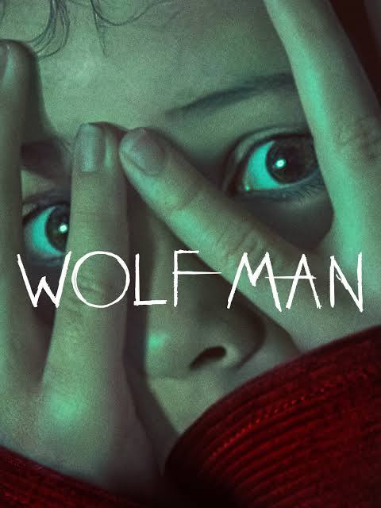
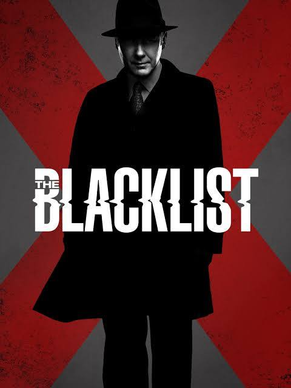

Movies
My Passion for Movies
 Movies have always been a big part of my life. Whether it’s a classic thriller, a gripping crime drama, or an action-packed adventure, I enjoy immersing myself in different stories and exploring the creativity behind filmmaking. Watching movies is not just entertainment for me—it’s a way to relax, learn, and appreciate storytelling from different perspectives. Below are a few movies that I enjoyed watching and would recommend you do to!
Wolfman
One of my favorite films is The Wolfman, a thrilling horror movie with an eerie atmosphere and gripping performances. The Wolfman (2010) is a dark and thrilling horror film about a man who returns to his family estate and gets cursed with lycanthropy. The movie stands out with its gothic atmosphere, intense action, and strong performances, especially by Benicio del Toro and Anthony Hopkins. While it has impressive visuals and eerie settings, some critics felt the storyline was predictable. Still, it delivers a solid werewolf horror experience.
The Blacklist
 I also enjoy binge-watching crime dramas like The Blacklist, which keeps me hooked with its suspenseful twists and brilliant character development. The Blacklist is a crime thriller TV series that follows Raymond "Red" Reddington, a brilliant fugitive who works with the FBI to catch dangerous criminals. James Spader’s performance as Red is the highlight of the show, bringing charm, intelligence, and mystery to the character. The show is filled with suspense, unexpected twists, and deep character development. While some seasons feel stronger than others, The Blacklist remains an engaging and binge-worthy series for crime and mystery lovers.